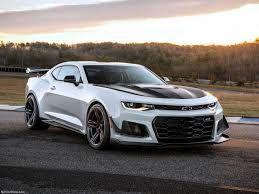
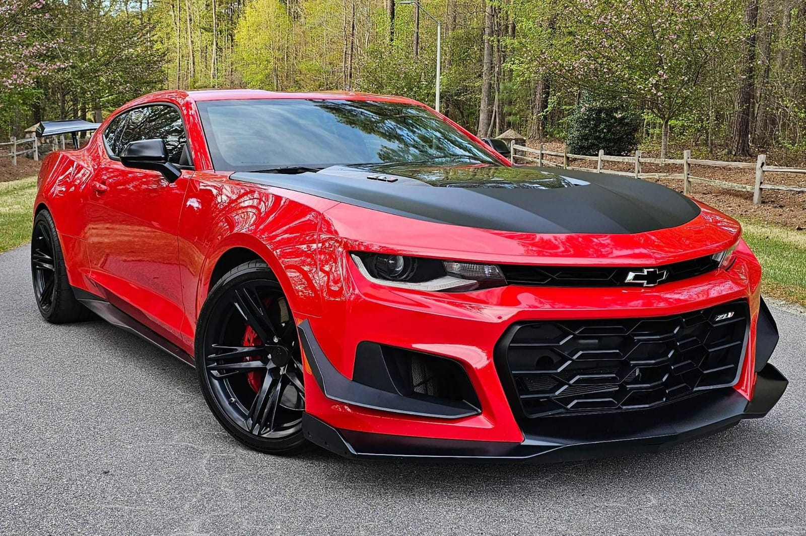
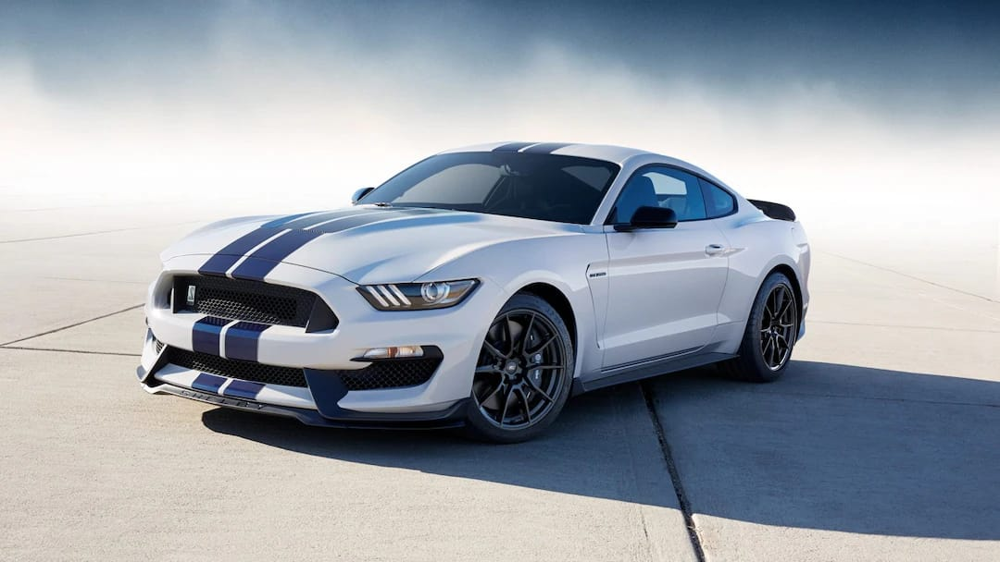
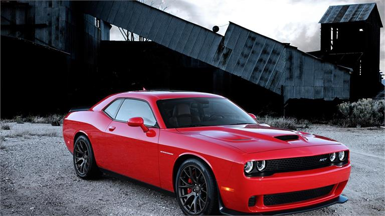
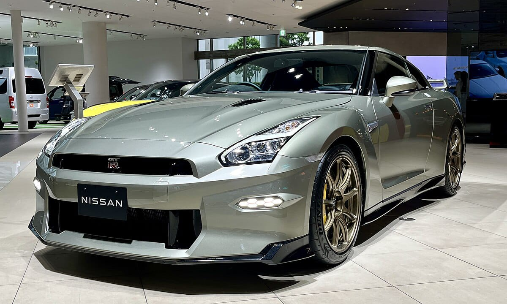
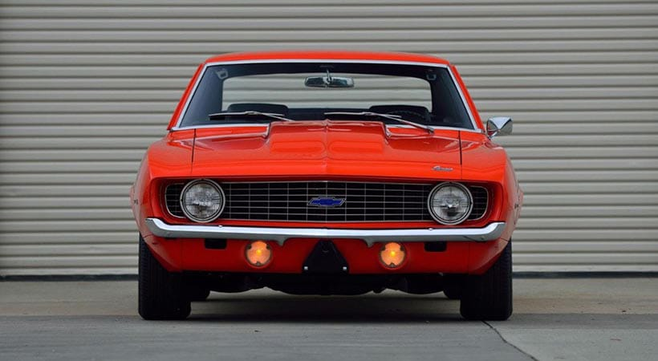
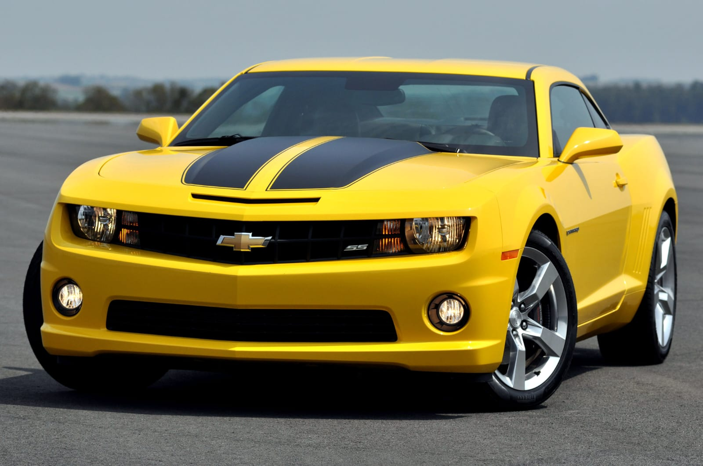
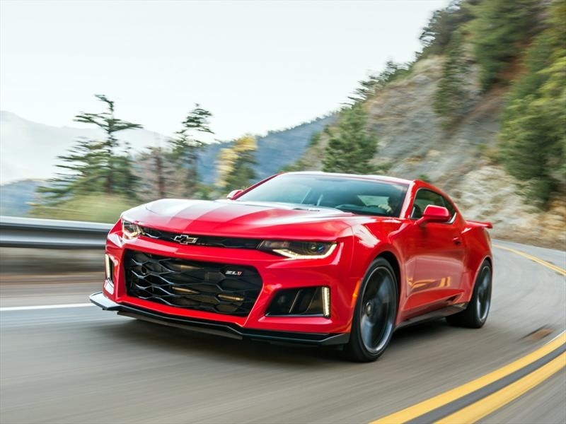
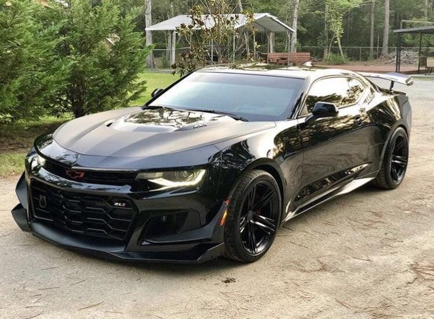

CAMARO ZL1
El camaro ZL1 fue creado en 1969 como una edicion ilimitada,deseñada para competir en carreras de automoviles.
Solose produjeron 69 unidades de este modelo, lo que lo comvierte en un coleccionable muy valioso.
En 2012, chevrolet lanzo una nueva generacion del ZL1,con um motor v8 de 500 caballos de fuerza y una manual de 6 velocidades

Es un automovil deportivo de alta performance,parte de la quinta generacion del Camaro.
Fue creado a travez del sistema de pedidos COPO de chevrolet, diceñado para recibir pedidos especiales de vehiculos
El chevrolet Camaro ZL1 coupe ha sido la espina clavada del Ford Mustang y el Dog Challenger SRT durante algun tiempo , pero desde que esas marcas lanzaron las versiones Mustang Shelby GT500 Y Challenger SRT Hellcat Redey de sus coupes
El duro ZL1 ha estados jugando a ponerse al dia.Se esta haciendo un poco largo ,pero sigue siendo una maquina increible , grasias a un V8 sobrealineamiento de 6,2 litros que envia 650 CV y 650 Lb- pie de par alas ruedas traceras.
Lo que lo mantiene emocionante es el hecho de que sigue estando disponible con una transmicion manual de 6 velocidades de series, aunque tambien esta disponible una habiltransmicion automatica de 10 velocidades

CARACTERISTICAS

MOTOR;
El ZL1 cuenta con un motor V8 de alta performance, diseñado para ofrecer una gran potencia y rendimiento.
RENDIMIENTO;
Estaequipado con una transmision manual o automatica de alta performance, lo que le permite alcanzar velocidades impresionantes .
- Aceleración 0-60 mph (0-97 km/h): 3.5 segundo
- Velocidad máxima: 198 mph (319 km/h)
- Tiempo en cuarto de milla: 11.4 segundos
DICEÑO;
Su diseño es aerodinámico y agresivo, con líneas deportivas y una parrilla frontal distintiva.
SUSPENCION:
Cuenta con una suspension mejorada, diseñada para manejar las altas velocidades y curvas cerradas.
FRENOS;
Esta equipado con frenos de alta performance, diseñados para detener el vehiculo rapidamente y con seguridad
DICEÑO Y EQUIPAMIENTO;
-Diseño aerodinamico con aleron trasero y difusor
- Asientos deportivos con ajuste electrico y calefaccion
-Pantalla tactil de 8 pulgadas con sistema de infoentretenimiento
-Conectividad Bluetooth y USB
-Camara de vision trasera
PRECIOS;
- Precio base: alrededor de $64,000
- Precio con opciones y paquetes: hasta $80,000
C O M P E T I D O R E S
- Ford Mustang Shelby GT350

- Dodge Challenger SRT Hellcat

- Nissan GT-R

Ventajas y desventajas del CAMARO ZL1
VENTAJAS;
- Alto rendimiento y aceleracion
- Diseño aerodinamico y agresivo
- Equipamiento de alta tecnologia
DESVENTAJAS;
- Precio elevado
- Consumo de combustible alto
- Espacio reducido en el asiento trasero
E V O L U C I O N
1969: El primer ZL1
- Motor: V8 de 427 pulgadas cubicas
- Potencia: 430 caballos de fuerza
- Transmision: Manual de 4 velocidades
- Peso: 3,400 libras
- Produccion: 69 unidades

2012: ZL1 de quinta generacion
- Motor: V8 de 6.2 litros supercargado
- Potencia: 580 caballos de fuerza
- Transmision: Manual de 6 velocidades o automática de 6 velocidades
- Peso: 3,800 libras
- Produccion: Limitada a 3,000 unidades

2017: ZL1 de sexta generacion
- Motor: V8 de 6.2 litros supercargado (LT4)
- Potencia: 650 caballos de fuerza
- Transmision: Manual de 6 velocidades o automatica de 10 velocidades
- Peso: 3,600 libras
- Produccion: No limitada

2020: ZL1 de sexta generación actualizada
- Motor: V8 de 6.2 litros supercargado (LT4)
- Potencia: 650 caballos de fuerza
- Transmision: Manual de 6 velocidades o automatica de 10 velocidades
- Peso: 3,600 libras
- Produccion: No limitada

CAMBIOS SIGNIFICATIVO
- 2012: Se agrego un sistema de suspension magnetorheologica (MR) para mejorar el manejo.
- 2017: Se introdujo un nuevo diseño de cuerpo y un sistema de escape activo.
- 2020: Se actualizo el sistema de infoentretenimiento y se agregaron caracteristicas de seguridad avanzadas.
EDICIONES ESPECIALES
- ZL1 1LE (2017): Edición de alto rendimiento con un alerón trasero y neumáticos Michelin Pilot Sport 4S.
- ZL1 1LE de 50 aniversario (2019): Edición limitada para celebrar el 50 aniversario del ZL1.
La evolucion del Camaro ZL1 ha sido marcada por mejoras constantes en su rendimiento, manejo y diseño, convirtiendolo en uno de los muscle cars mas emblematicos de la historia.